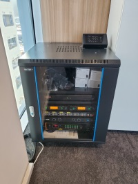

☰
회사소개
회사소개
회사연혁
오시는 길
LED Display
투명OLED
투명LCD
LED전광판
모니터
터치패널
영상통합제어시스템
Smart Office
투명OLED
투명LCD
모니터
영상통합제어시스템
시공사례
시공사례
LED디스플레이
사이니지
고객센터
공지사항
상담문의
전시홍보관 방문예약
실내·실외 맞춤형 LED 디스플레이
탁월한 화질과 유연한 설치로 기업의 가치를 높입니다.
사이니지
판교 I사 ELV홀
자세히 보기 →
대형 LED디스플레이
판교 I사 임원실
자세히 보기 →
전자칠판 및 빔프로젝트
판교 I사 회의실
자세히 보기 →

빔프로젝트 음향장치
판교 I사 회의실
자세히 보기 →
📞
전화상담
💬
카톡상담
🏢
방문예약
📩
상담문의
📄
회사소개
🌙
다크모드